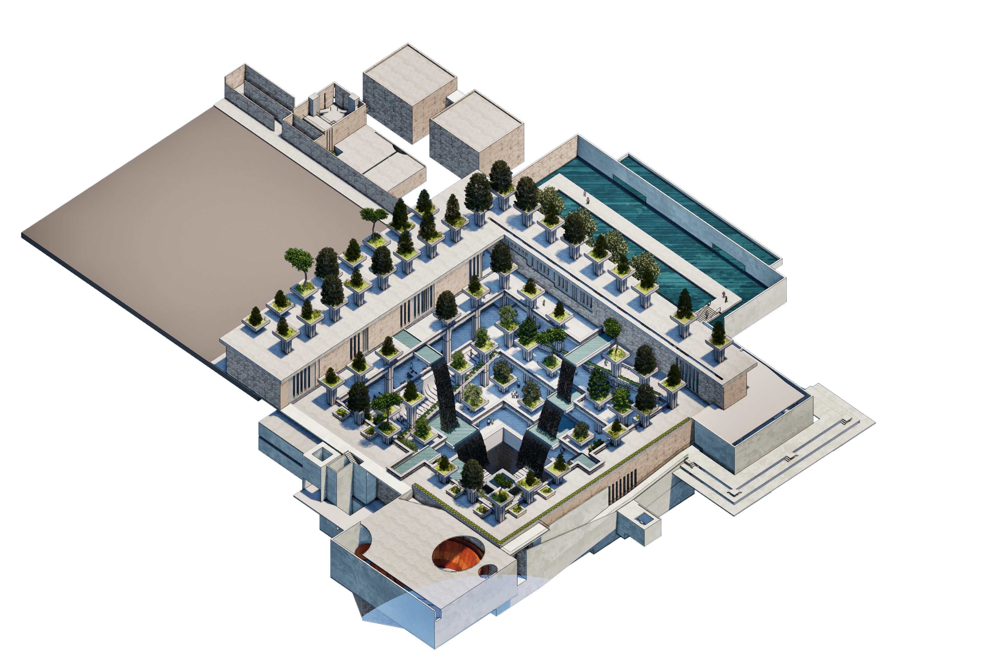
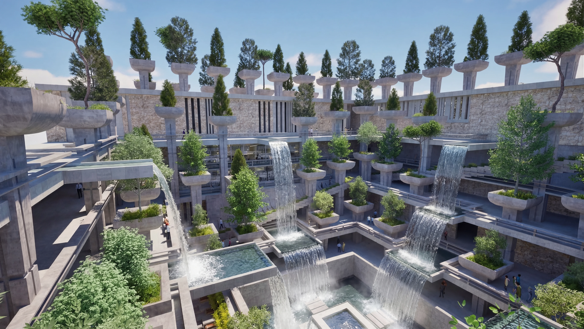
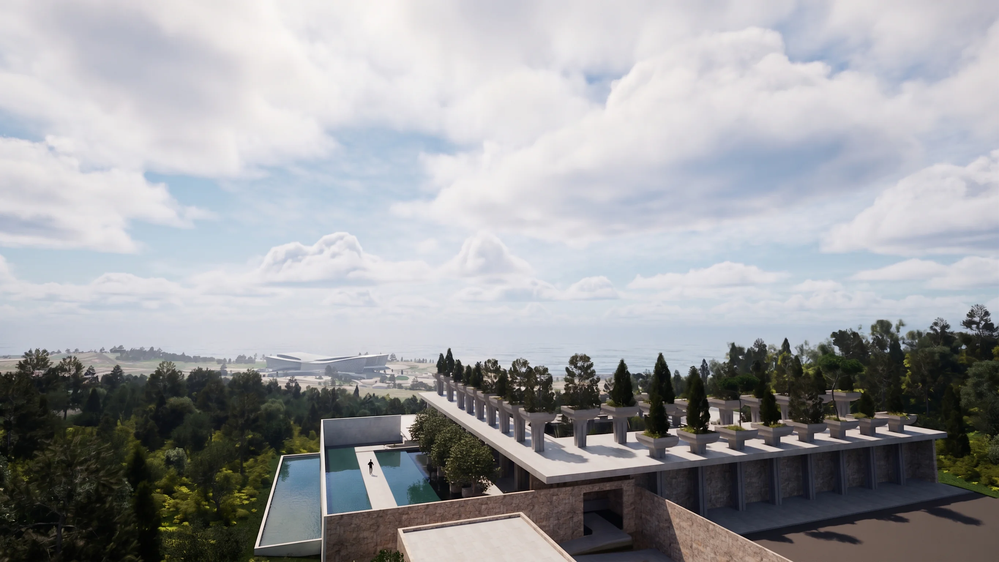
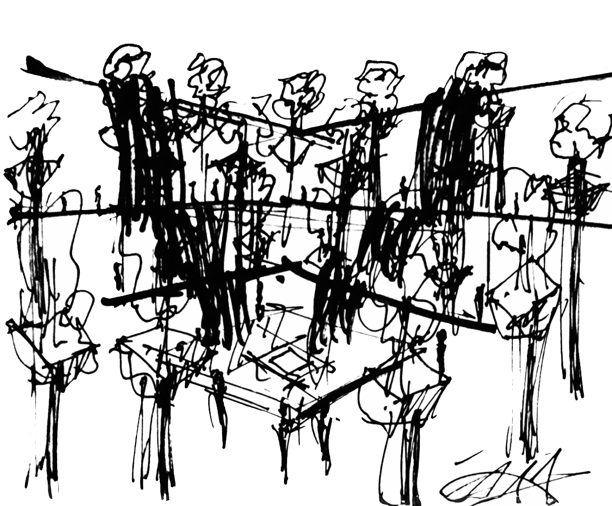

Eden Art Museum
The Eden Art Museum is conceived as a museum of descent, where the permanent exhibition leads visitors gradually into the earth before revealing a great central garden at its core. Rather than presenting the museum as a single object, the project is organized as a sequence of spatial transitions that use movement, curiosity, and natural light to guide visitors downward.
At the heart of the museum is a sunken garden courtyard surrounded by gallery spaces, allowing art, landscape, and circulation to remain in constant dialogue. Lush trees are elevated on structural pillars, creating a suspended garden within the void, while waterfalls descend from ground level into the center.
Set in Seogwipo, Jeju-do, the project draws from the island's volcanic terrain, dramatic topography, and dense natural atmosphere. Through its descending exhibition sequence, naturally lit circulation, and monumental courtyard, the museum becomes a spatial journey from enclosure into revelation.
scroll to descend ↓


